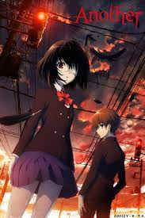

2. attack on titan

3. death note
4. one punch man

5. another

soooo hey,I'm aaditya sinha and I'm from Ranchi,Jharkhand. to be honest I do not have any particular hobby or something but yeah I have my interest in coding and i also like to watch anime,so i would like to talk about it in this web page.
Anime is hand-drawn and computer-generated animation originating from Japan Outside Japan and in English, anime refers specifically to animation produced in Japan.[1] However, in Japan and in Japanese, anime (a term derived from a shortening of the English word animation) describes all all animated works, regardless of style or origin. Animation produced outside Japan with similar style to Japanese animation is commonly referred to as anime-influenced animation.